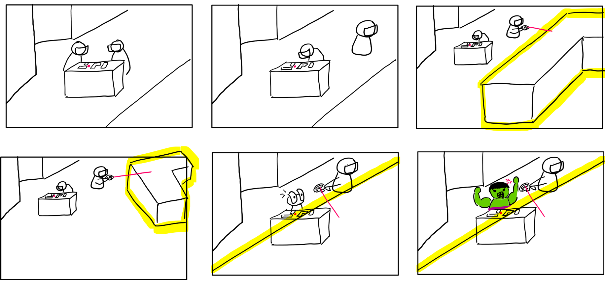
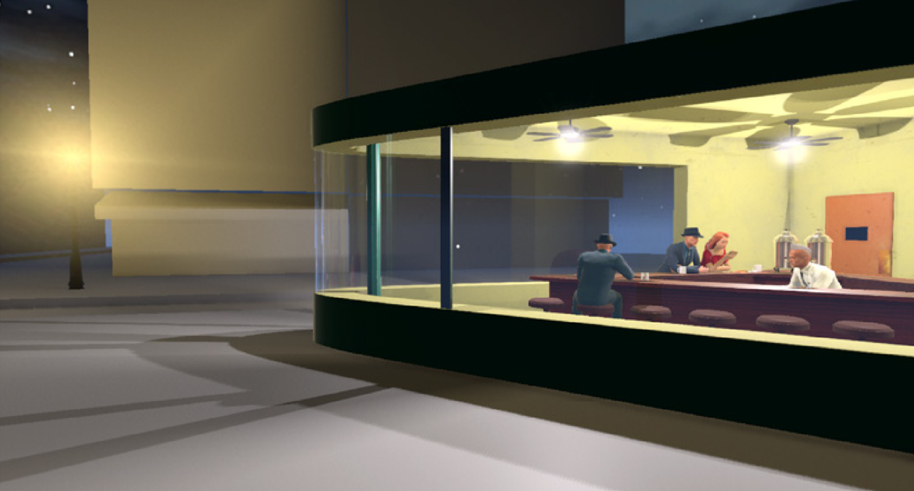
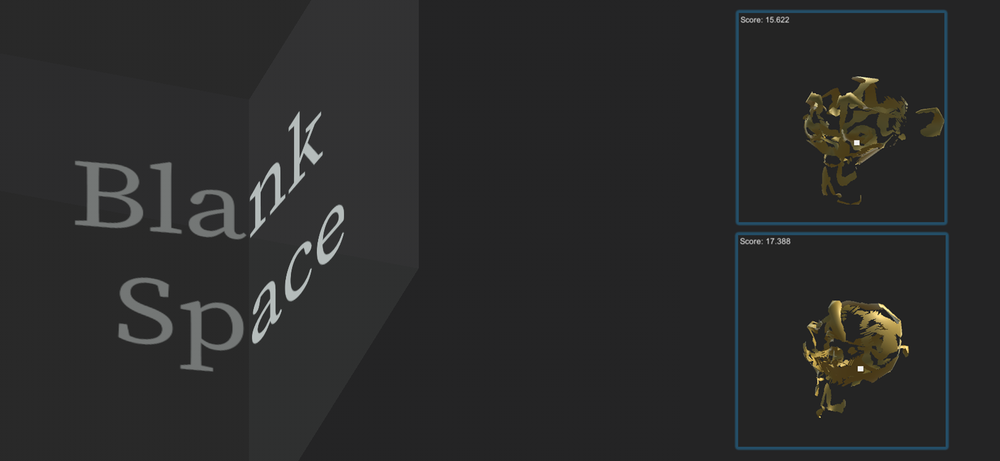
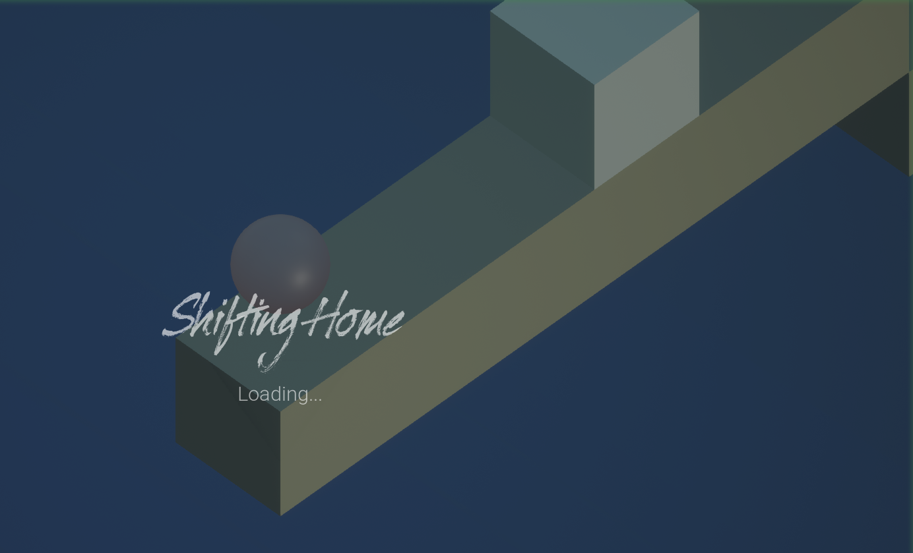
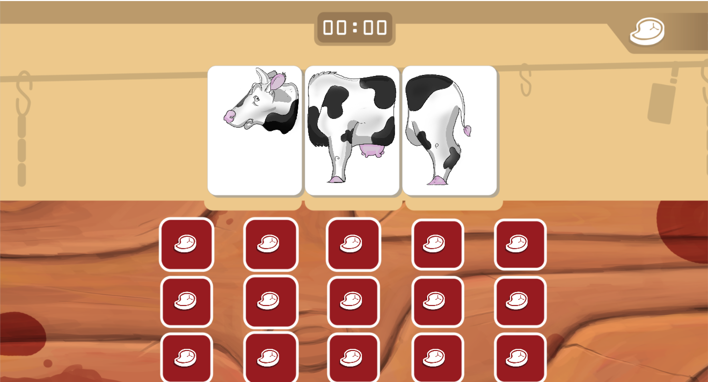
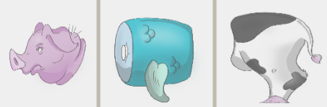
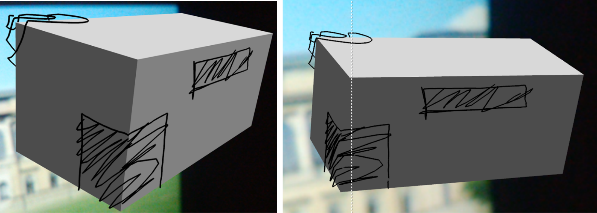
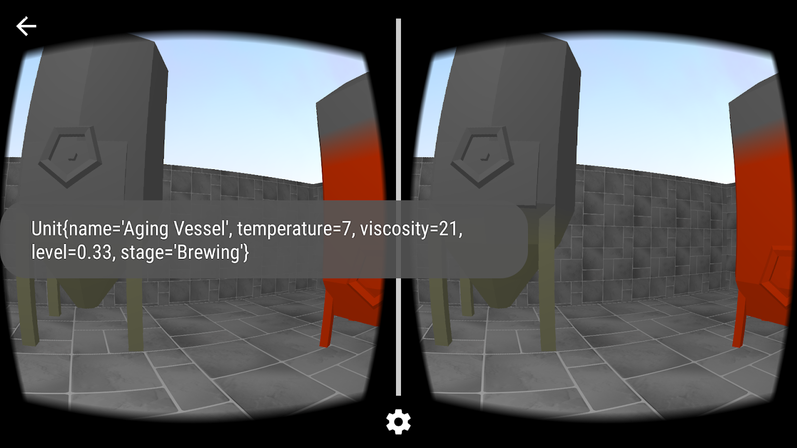
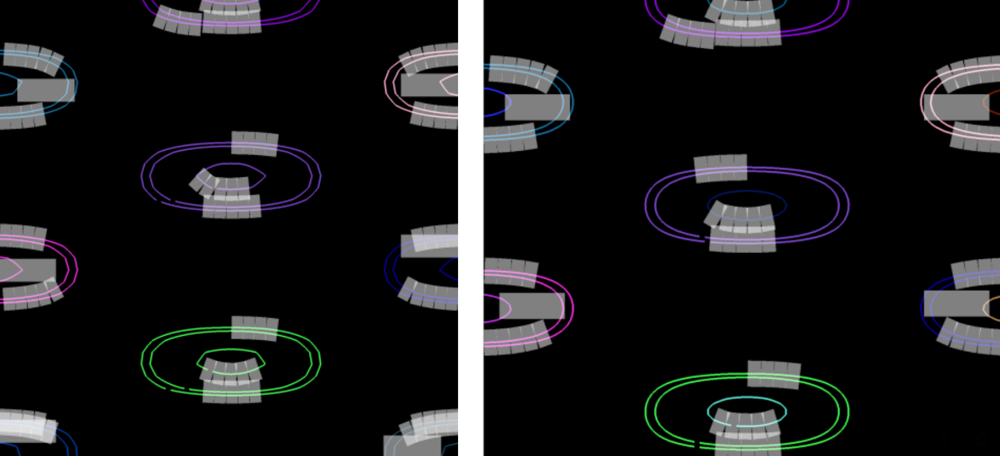

Workspace
awareness in Virtual Reality: Digital collaboration in urban planning
phases, Master’s Thesis (https://tinyurl.com/ThesisGitRepo), 7 month (30 ECTS)

Tags:
Unity3d, Git, Oculus Rift, HTC Vive, Blender, Adobe
Photoshop
In
this study I explored how aware people are of one another in VR
environments when performing their individual architectural
design-related tasks. During this 7-month long project I got to
really deepen my knowledge of Unity3d and VR development in the
engine. After 5 user studies and about thirty participants, I
concluded that audio feedback is an invaluable tool that considerably
enhances workspace awareness in such environments, both in
combination with visual cues and by itself.
Pictorial
Space 2.0 // Artwork retold
(https://tinyurl.com/NightHawrksVR-files), 6 month (5 ECTS)

Tags:
Unity3d, Git, Oculus Rift, Blender, Substance Painter, Adobe
Photoshop
Together
with an urban design student we worked on a semester long Interactive
Visualization project, where we aimed to bring Nighthawks by Edward
Hopper to life in VR. This where I first learned how to develop for
VR and got a chance to try out my skills in Unity3d and Blender.
Additionally, this was my main encounter with Substance Painter, as
the tool was extensively used for the interior texturing.
The
final presentation for the project can be found at: https://tinyurl.com/NightHawksVR
Blank
Space (https://github.com/bowlingforsoap/Blank-Space), 2 days (Game Jam)

Tags:
Unity3d, Blender
In
this jam, with the topic “Invisible”, I got to prototype
an idea I had for quite some time – drawing on invisible 3D
objects and letting players guess what shape it was. In a team of 2
programmers, we transformed the initial idea into a game concept, and
by the end of two days had a playable prototype.
Shifting
Home (https://globalgamejam.org/2019/games/shiftinghome),
2 days (Global Game Jam 2019)

Tags:
Blender3d, Adobe Illustrator, Adobe Photoshop, Unreal Engine 4
My
first introduction to the Unreal happened during the #GGJ19. Even
though, for this project I took on a role of the lead artist, it was
very exciting to gain a new perspective through a new engine, as my
previous experience was developing games exclusively in Unity.
Meetory
(https://tinyurl.com/MeatoryGitRepo),
2 days (Game Jam)

Tags:
Unity3d
Working
in a team with a talented artist and a novice programmer, we created
a memory game with a twist. In order to save animals from slaughter
and clear the board, you have to combine the correct animal parts,
which goes horribly wrong sometimes...

A
freehand sketch tool for conceptual urban design in an augmented
reality application (as
a part of the CDP project: http://cdp.ai.ar.tum.de/), 1.5 years (16 ECTS)

Tags:
Android Studio, MetaIO SDK, AR, Git, Blender, Adobe Photoshop
As
a part of an interdisciplinary project, I was tasked with
implementing 3D sketching capabilities for an Android AR application.
The drawings had to be projected on a 3D object, so that when it is
manipulated the drawings remain “stuck”. Much of this
project was porting the legacy Eclipse code to Android Studio and
wrestling with a deprecated MetaIO SDK, whoever in the end I got a
chance to hone my Android skills, both SDK and NDK, solve different
projection-related mathematical problems, and get some further
insights into AR.
Real-time
Visualization of Machine Data via Google Cardboard SDK
(https://tinyurl.com/CardBoard-slides), 6 month (10 ECTS)

Tags:
OpenGL ES, GLSL, GoogleVR, Android Studio, Git, Blender
During
this Android practicum I got first introduced to VR and Android development. In a team of two, we were tasked with exploring the feasibility of using
mobile VR for presentation requirements of the customer. My teammate
investigated an approach with Unity3d, and I got to apply my
self-acquired OpenGL skills and tried to tackle the problem with a
native OpenGL ES solution. While we found Unity solution preferable
for the customer’s needs, I got to dive into peculiarities of
low-level graphics development for mobile and a received a first real
chance to test my graphics programming skills.
GPU-based
label placement for contour lines on meteorological maps
(https://tinyurl.com/OpenGL-maps), 6 month (10 ECTS)

Tags:
OpenGL, GLSL, C++, Visual Studio
A
second chance to improve my OpenGL proficiency came with a guided
research on label placement. Here, I tested both geometry and compute
shaders to see which approach would yield better rendering times. As
a result, this project let me deepened the understanding of
programming the rendering pipeline.